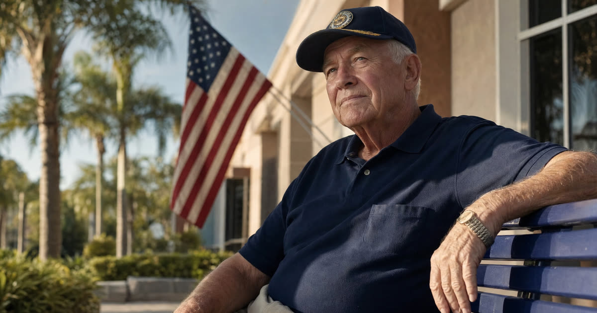

The Two Decisions Every Florida County Makes: DCF for Money, CARES for Medical Need
When I sit down with a Seminole County family for the first time, I tell them that a nursing home Medicaid case is really two separate reviews happening at once. One agency asks whether the applicant qualifies financially. A different agency asks whether the applicant actually needs the level of care a nursing facility provides. Both have to say yes.
The financial side runs through the Florida Department of Children and Families, using the statewide ACCESS Florida system. There is no separate Seminole County DCF office to visit or call for this; the application is filed online, and DCF reaches out by phone to conduct the eligibility interview once the application is submitted. This is the same portal and the same process whether the family lives in Sanford, Oviedo, Lake Mary, Altamonte Springs, or Casselberry. The underlying rules on countable assets, the look-back period, and spend-down strategies are covered in detail elsewhere in this series, so I will not repeat them here beyond saying they apply the same way in Seminole County as anywhere else in Florida.
The medical side belongs to CARES, which stands for Comprehensive Assessment and Review for Long-Term Care Services. CARES is operated through the Department of Elder Affairs, and it is the federally required screening that determines whether an applicant genuinely needs nursing facility care, rather than a lower level of assistance. A CARES nurse or assessor typically completes this evaluation through a face-to-face or facility-based assessment, at no direct cost to the applicant. For residents in Seminole and neighboring Orange County, CARES staff handle these assessments on a regular weekday schedule, and the review happens independently of, but alongside, the DCF financial review.
For a family like Donald's, in Oviedo, this means two tracks moving in parallel: the ACCESS application answering 'can he afford to qualify,' and CARES answering 'does he need to be there.' Both have to clear before Medicaid will pay the nursing facility.
Have this exact situation? Talk it through with a Florida attorney — the 20-minute consultation is free.
Book Free Consult or call (888) 388-8445The Front Door for Help: The Area Agency on Aging and the Elder Helpline
Donald's situation started, as it often does, with a hospital stay rather than a Medicaid application. His wife of fifty years was overwhelmed, had never dealt with DCF or CARES before, and did not know where to begin. This is exactly the gap the Aging and Disability Resource Center network was built to fill.
In Seminole County, that regional entry point is the Senior Resource Alliance, which serves as the Area Agency on Aging for this part of Central Florida, covering Seminole along with several neighboring counties. The Senior Resource Alliance operates the local Elder Helpline, and Florida also maintains a statewide Elder Helpline number as a backup. A call to either number triggers a needs assessment that can connect a family to case management, in-home services, caregiver support, and information about waiver programs for care at home, in addition to guidance about nursing facility Medicaid.
It is worth understanding that the home and community-based waiver programs these agencies help coordinate often carry a waiting list, and they are a different pathway from nursing facility Medicaid, which does not have the same waitlist structure once eligibility is established. For a family focused specifically on a nursing home placement, the Elder Helpline is still a useful first call because the person answering can often tell you, in plain language, what happens next and can flag whether a CARES referral has already been made by the hospital or facility.
What Care Actually Costs: Rehab Days, Long-Term Care, and the Medicaid Rate
Families are often confused by the difference between a short rehab stay and long-term custodial care, and that confusion matters because it changes who pays. When Donald was discharged from the hospital to a skilled nursing facility for rehabilitation, that stay was likely covered, at least in part, by Medicare for a limited number of days, because it was tied to recovery and skilled therapy rather than ongoing custodial need. Long-term nursing home care, by contrast, is custodial: help with daily living needs on an indefinite basis. Medicare generally does not pay for this, which is why Medicaid becomes the relevant program once it becomes clear that someone like Donald will need to stay.
Private-pay nursing home rates in the Seminole County and greater Orlando market can be substantial, and the exact current daily or monthly rate varies by facility, room type, and level of care, so I will not quote a specific figure here since it was not confirmed at the time of writing and changes year to year. What families should know is that the Medicaid-approved daily rate paid to a certified facility is set by the state and is typically lower than the facility's private-pay rate. A facility that accepts Medicaid is required to accept that state-set rate for a Medicaid-approved resident, which is part of why the certification status of the bed matters so much.
Finding a Certified Facility and Having the Medicaid Pending Conversation
Seminole County is served by a number of Medicaid-certified nursing facilities, and the state maintains an online facility locator through the Agency for Health Care Administration's FloridaHealthFinder tool, where families can search by county and see which facilities are currently certified, along with quality ratings and inspection history. I am not going to name specific facilities here, since that list changes and a family's choice often depends on location, bed availability, and personal fit, but the locator is the right starting point for comparing options near Sanford, Oviedo, Lake Mary, Altamonte Springs, and Casselberry.
Once a facility is chosen, most business offices are experienced with what is commonly called 'Medicaid pending' status. This means the resident is admitted and begins receiving care while the DCF application and CARES review are still working their way through the system. The facility's business office will usually ask the family to keep them updated on the application status, and many offices have a staff member who regularly handles these conversations and can explain their own documentation requests. Families should expect to provide the facility with the same financial paperwork DCF is requesting: proof of income, and several years of statements for every bank, brokerage, and retirement account, including closed accounts. Having this paperwork organized early is one of the single biggest things that keeps a Medicaid pending case moving smoothly.
Local Wrinkles Seminole County Families Often Run Into
A few patterns show up often enough in this part of Central Florida that they are worth naming directly.
- Hospital-to-rehab-to-long-term-care transitions. Many Medicaid applications in Seminole County begin the way Donald's did: an acute hospitalization, followed by a Medicare-covered rehab stay, followed by a recognition that the person will not be returning home. Families are often not thinking about Medicaid during the hospital and early rehab phase, which can compress the planning timeline later.
- Seasonal and part-time residents. Central Florida, including Seminole County, has a meaningful population of seasonal or part-year residents. Florida Medicaid requires Florida residency, and families who split time between states need to think through residency and domicile questions before or during the application, since this can affect both the DCF application and any related homestead or asset planning.
- The community spouse at home. Donald's wife remained in their home in Oviedo while he moved into care. This is one of the most common and most important fact patterns in Florida Medicaid planning, since special rules exist to protect income and assets for a spouse who stays in the community. That topic has its own dedicated explainer elsewhere in this series, but it is worth flagging here because it shapes nearly every financial decision the family makes during the application.
From First Call to Approval: A Realistic Timeline
For a family in Donald's position, the practical sequence tends to look something like this. A hospital social worker or discharge planner often makes the first referral to CARES, sometimes before the family has even thought about Medicaid. Around the same time, or shortly after, the family calls the Elder Helpline or the Senior Resource Alliance for orientation and, if needed, help understanding the options. The DCF application is then filed through ACCESS, either by the family directly or with help from the facility's business office or an elder law attorney, and DCF follows up by phone to conduct the financial interview.
From a complete application, DCF's standard practice is to issue a decision within forty-five days, assuming the CARES medical review and all financial documentation come in without delay. Missing bank statements, unclear asset titling, or complications involving a prior transfer can extend this considerably, which is one of the main reasons families bring in a Florida elder law attorney, particularly when there is a spouse at home, a house that needs to be addressed, or assets that require restructuring before the application is filed.
Frequently Asked Questions
The Truestead Takeaway
Donald is a composite, not an actual Truestead client, but his situation reflects what nearly every Seminole County family experiences the first time a parent needs nursing home care: a hospital stay that turns into a rehab stay that turns into a long-term placement, with DCF, CARES, and the facility's business office all entering the picture at once. The practical path forward is to let the Senior Resource Alliance or Elder Helpline orient the family early, file the ACCESS application promptly, gather the financial documentation DCF will request, and confirm the chosen facility's Medicaid-certified bed status before assuming coverage will transfer automatically from rehab to long-term care. Because the financial and medical reviews move on parallel tracks, and because a spouse remaining at home changes the math considerably, this is a good moment to have a Florida elder law attorney review the specific facts before, rather than after, assets move.
Sources
- Florida Department of Children and Families, ACCESS Florida system, myflfamilies.com
- Florida Department of Elder Affairs, CARES program overview
- Agency for Health Care Administration, FloridaHealthFinder facility locator
- Senior Resource Alliance, Area Agency on Aging for Orange, Osceola, Seminole and Brevard counties
Have a child turning 18? Get the free 18 & Protected packet — the legal documents every Florida 18-year-old needs.
Get the Free PacketTalk to a Florida Attorney
Every family’s situation is different. Schedule a consultation with Arthur Simpson, Esq. to review your plan and your options under Florida law.
Schedule a Consultation →This article is for general informational purposes only and does not constitute legal advice, nor does reading it create an attorney-client relationship. Florida estate, elder, probate, and real estate law are fact-specific and change over time. Consult a licensed Florida attorney about your individual circumstances. Arthur Simpson, Esq. is licensed to practice law in the State of Florida. Attorney advertising.
Talk to a Florida Attorney — Free 20-Minute Consultation
Pick a time below. No obligation, no pressure — just answers.